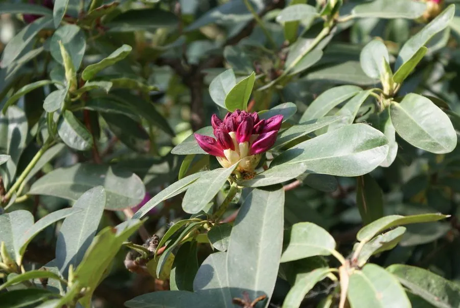

灌木与花木 · 植物界
西洋杜鹃 Rhododendron hybridum

杜鹃花科杜鹃属常绿灌木，由多种杜鹃杂交培育而成，花大色艳、花期长，是春节前后最畅销的盆栽花卉之一。
- 分类
- 门被子植物门纲木兰纲目杜鹃花目科杜鹃花科属杜鹃属
- 栖息环境
- 温室与半阴花圃栽培，喜凉爽湿润、通风良好的环境
- 地理分布
- 园艺杂交类群，中国江苏、浙江、福建、广东等地广泛栽培
- 保护级别
- 栽培类群，无野生种群；不涉及保护等级
物种志
西洋杜鹃为杜鹃花科杜鹃属常绿灌木，高五十至一百五十厘米，分枝多而密集，幼枝密被棕褐色糙毛。叶片互生，革质，椭圆形至倒卵形，表面深绿有光泽，背面淡绿并被毛。花两至数朵簇生于枝顶，花冠漏斗状，重瓣或半重瓣，颜色有红、粉、白、紫及复色，花期十二月至翌年四月，温室栽培可全年见花；蒴果小，成熟时开裂，果期秋季。
西洋杜鹃并非野生种，而是由毛叶杜鹃、映山红等多种杜鹃经过长期杂交选育而成的栽培类群，中国江苏、浙江、福建、广东等地大量生产。它喜凉爽湿润和半阴环境，要求酸性土壤，忌高温闷热和碱性水浇灌。花大色艳、株型紧凑，是春节前后的重要年宵花，也可作庭园花境和盆景材料。栽培中需注意通风，避免根腐和叶斑病。
形态与习性
- 株高0.5–1.5 m，分枝密集
- 花期12 月至翌年 4 月，温室可全年
- 果期秋季，蒴果小、开裂
- 光照喜半阴，忌夏季暴晒
- 水分喜湿润，忌积水烂根
- 土壤酸性腐殖土，pH 5 左右
- 主要用途年宵盆栽、花境与盆景
趣味知识
- 西洋杜鹃是多个杜鹃原种长期杂交的产物，园艺品种已超过数千个。
- 它花大而密，一株成年植株盛开时可同时开出上百朵花。
- 西洋杜鹃对水质敏感，长期用碱性自来水浇灌会导致叶片黄化。